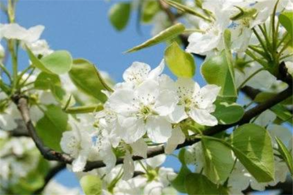
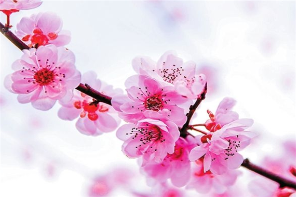
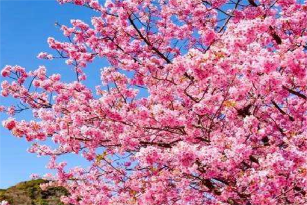
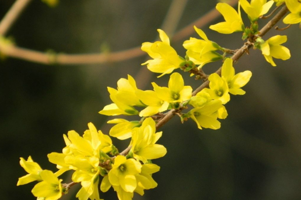
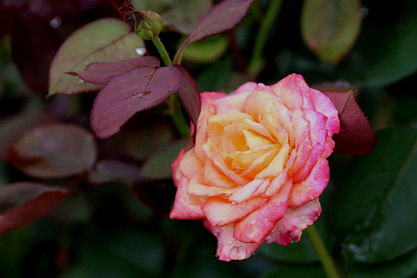
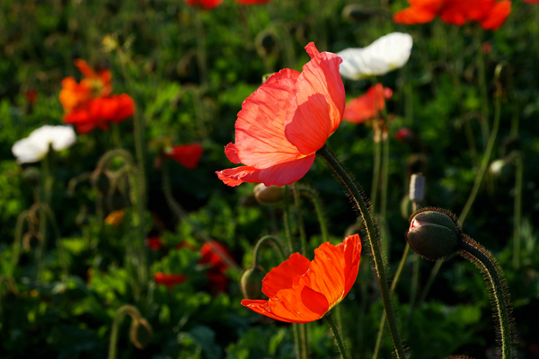

- 
梨花
梨花，蔷薇科梨属，梨树的花朵。梨树，落叶乔木，叶圆如大叶杨，干有粗皮外护，枝撑如伞。春季开花，花色洁白，如同雪花，具有浓烈香味。果可供生食外，还可酿酒、制梨膏、梨脯，以及药用。 - 
梨花
桃花属蔷薇科植物。叶椭圆状披针形，核果近球形，主要分果桃和花桃两大类。桃花原产于中国中部、北部，现已在世界温带国家及地区广泛种植，其繁殖以嫁接为主。 - 
樱花
樱花是蔷薇科樱属几种植物的统称，在《中国植物志》新修订的名称中专指“东京樱花”，亦称“日本樱花”。樱花品种相当繁多，数目超过三百种以上，全世界共有野生樱花约150种，中国有50多种。 - 
迎春花
春别名迎春、黄素馨、金腰带，落叶灌木丛生。株高30-100厘米。小枝细长直立或拱形下垂，呈纷披状。3小叶复叶交互对生，叶卵形至矩圆形。花单生在去年生的枝条上，先于叶开放，有清香，金黄色，外染红晕。 - 
月季花
被称为花中皇后，又称“月月红”，是常绿、半常绿低矮灌木，四季开花﹐一般为红色﹐或粉色、偶有白色和黄色﹐可作为观赏植物，也可作为药用植物，亦称月季。 - 
虞美人
一年生草本植物，全体被伸展的刚毛，稀无毛。茎直立，高25-90厘米，具分枝。叶片轮廓披针形或狭卵形，羽状分裂，裂片披针形。